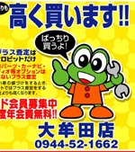
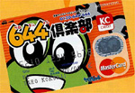
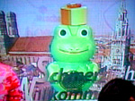
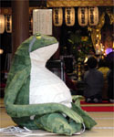
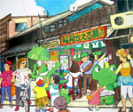
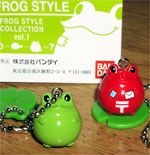

かえるクレジットカード！ 【福岡発Kazoo様】 今日は、仕事中にカエル ネタを見つけましたのでご報告のメールです。「ケロピット」という中古車屋さんの広告と、そこの 国内信販提携のカード申込書です。
 なんと、全面にカエルを打ち出しています。（何故かは不明です。）しかもカード名 は644倶楽部カード（644はケロヨンヨンと読ませたいみたい）と少し強引です。しか も、中を見ると、まるで従業員は皆カエルのようなイメージ。カエルが車の整備をす るとは思えませんが。なんとなく気になったので送ります。
【全国かえる奉賛会】うおおおおおお。カエルカードやんかあ。待望の全面カエルなクレジットカードが出ていたとは！さあああ。カエラーのみなさああああん。福岡で中古車販売とカーコンビニを手掛ける、この会社のカードを使おうではないかああああ。手持ちの大手カードを廃棄処分にして、これからは国内信販一発だあああ。上原多香子が宣伝しているので、大王も大好きなのであるうう。国内信販。
ドイツ語講座カエルはカラオケカエル！ 【広島発祇園かえる王同志記者】平成15年4月14日で質問されていた、ドイツ語講座に出演しているカエルについてです。あのかえるはストーリー上で「カラオケガエル」ということになっています。実は昨年もこのシリーズは同じものをやっており、かえる王はその直前の番組である「教養セミナー・世界くらしの旅」（地理）が自分の教科関連なもので、撮りだめしておりました。 ドイツ探偵社物語、日系の血の混じるドイツ人である「カンベン」が考案した「カラオケガエル」（カエル型携帯カラオケマシン）、会社には散々の不評ながら、なぜか彼が行く先々でこのカエルは盗もうとするあやしの影が続出、、、といったサスペンスです。一週既に終わりましたが、ストーリーをお楽しみにして頂くため（？）ここでは明かしません。
もっとも大王様はじめ皆様にはこのカラオケガエルが本当にそういう品物であれば、喉から手（舌で十分だけど）の出ることと思います。もちろん残念ながらストーリーの関係上で、多分実物はただのケロタン加工品でしょう。
５月３日に実行委員会とカエル寺詣でを計画中！参加者を募集！ 【福岡発福岡かえる展５実行委員長Ｅ３同志記者】福岡で「カエル寺」と呼ばれる如意輪寺（小郡市三沢）。ここには我らが【カエル大明神】が祀られております。 毎年会期中はここから大名にお招きしているのです。そんなわけで。かえる展１ヶ月前あたりになると、例年ご挨拶に行っております。福岡に住んでいらっしゃる方からもよく問い合わせを受けますが、やはりカエラーならば一度は参らねばならない蛙ポイントです。 そこで今回「それなら皆でお参りしようよ計画！」が発動。スタッフがカエル寺までご案内しようというものです！カエル好き同士で連れ立っていくのもこれまた楽しいかと〜♪
お昼ご飯を食べながら、いつも至って和やかに進みます。スタッフ希望の方がいらしたら、この日に直接来て頂いてＯＫ！もちろん、スタッフ希望でいらっしゃらなくても、お時間のある方はカエル寺へ行く前の蛙話にでも♪５／３日の午前１１時、会場前に集合です。 カエル寺には行けないけど、カエル会議になら…という方も。そもそもカエル会議って何なんだ？…という方も。皆さんのご参加お待ちしております〜♪ 【現在の予定】 参加費は交通費実費だけです。行ってみようかな〜と思われる方は、当日集合場所（会場前）に直接お越し下さい。時間になったら出発いたします。 西鉄沿線にお住まいの方は三沢駅に集合でも構いません。私たちと合流いたしましょう！目印は……カエル帽を被ってる集団……はさすがに怖いので、勇気をもって話かけて頂けますか（笑）？ もし当日、三沢駅の方に来て下さることが決まっている場合は先にＥ３宛にメールを下さるとありがたいです。こっそり目印が決められますから。 「皆でカエル寺へ行こう計画！」特典は……カエル寺が分かること…っ！！連休のうちにカエルパワーを補給してお祭りに備えましょう♪皆さんの参加をお待ちしております！
福岡かえる展にあのＴシャツが出展！！ 【福岡発福岡かえる展５実行委員長Ｅ３同志記者】PARADE（パレイド）様が念願の蛙Ｔシャツを制作なさいました！こちらの「ＩＡＮ−ＢＡＫＡＮ」 というＴシャツのブランドでは太陽の光で絵が変わる…という非常に特殊なペイント法のＴシャツを創ってらっしゃいます。それだけでも大変珍しいというのに、なんと！今年の新作にとうとう「蛙Ｔシャツ」を発表されました♪ ピンクのおたまじゃくしがプリントされているのですがそれが、太陽にあたると手足がニョキッと生え、成長する…っ！！何と蛙好きのツボをつかんだ商品でありましょう。 その画期的なＴシャツが、何と福岡かえる展に出展されることが決定いたしました！！ご好意により、会期中は土日の数時間限定での販売も実施！今から本当に楽しみでワクワクしております♪当日は皆さんの目で成長するオタマを見て下さいね！
福岡かえる展５&長野かえる展の合同バナー募集期間を延長します！！【福岡発福岡かえる展５実行委員長Ｅ３同志記者】福岡＆長野の合同バナー公募のお知らせをして参りましたが、松本かえるまつりのHPでも告知して頂くようになりました。それでちょっと期間が短いということで、少々延期を。連休明けを締切りにさせて頂こうかと思います。ですので…５／５の連休最終日までですね！お休みもあるので、じっくり作れる方がいらっしゃるかなと。よろしくお願いいたしますね♪ 新作カエルガシャポン！ 【横浜発kissh同志記者】新しいガシャポンのカエルシリーズを発見してしまいましたので、ご報告を差し上げます。その名も「FROG STYLE」といい、かわいく丸っこくデザインされたキーチェーンマスコットのカエルシリーズです。これは第一段で、16種類のカエルがいます。 一匹ずつデフォルメされており、私が今日手に入れたのが赤いPOST FROGと、黄緑色のCOMMON FROGです。両方とも、睡蓮の葉っぱがセットになっており、チェーンを外すとちょこんと乗っかるように出来ています。 他にもメラメラ燃えた柄のFIRE FROGや、ホルスタイン柄のUSHI FUROGお腹にハートマークのLOVE FROG等がいるようです。あまりにかわいいので全部集めようと思っております。なお、6月には第2段も登場と予告されているので、今から非常に楽しみです。みんなで集めて、携帯やバックなどにぶら下げてかわいがりましょう！
【全国かえる奉賛会】うおおお。可愛い！大王の近所にあったカエルがちゃぽんは、なくなってしまい、なぜか代わりに爬虫類になっちまったんだよおおおお。大王の近所のガキは蛇が好きなんだろうか！とんでもないぞおお。だから、うらやましい。
かえるメモ用紙！【神奈川発ひなひな同志記者】自分のHPのアクセスカウンタが10000突破したのを記念して、添付のようなメモ用紙を作りました。ご希望の方にはhttp://www.littlefrog.org/kaerugumi/で無料で配付しております。かえるのマークの引越し屋！【千葉発がまおやぶん同志記者】はじめまして、千葉県のがまおやぶんという者です。引越し屋さんといえば、黒猫やゾウやアリやドラえモンやらをマークにしている業者さんが多いですが、なんとかえるのマークの引越し屋さんもありました！↓URLです。 蛙グッズ販売サイト発見！【福岡発爪姫様】爪姫様です。爪姫ぶりも見てほしいんですが、最近はカエルも気になる。蛙グッズがうってるサイト見つけたのでどぞ。大王はご存知かもしれませんが。。みなさん、爪姫コーナーも見に来て下さいね。ってどさくさ宣伝やんか（笑） ↓カエルグッズURLです。 |
メールマガジン登録
メールマガジン解除
Powered by


かえる古新聞過去に取り上げた記事を見出し付きで一覧したい人は、ここをクリック◆創刊号を見る◆先週号を見る◆話題の号を見る◆かえる新聞の昔を読む
|
私も入っています。。全国かえる奉賛会
大王様に会うには、このバナーをクリック。ずっと奥に写真館があるぞ。全国かえる奉賛会に入会するには、自分のホームページのどこかに、下の部分を追加するとバナーがリンク付きで表示されるぞ。どんどん入会しましょー |


|
 １１時に集合しても…カエラーに会えるかも…？！カエル寺へ行く前に、スタッフ会議を行うのです！かえる展を前に、一層熱い論議が繰り広げられます！……ってことはなく（笑）。
１１時に集合しても…カエラーに会えるかも…？！カエル寺へ行く前に、スタッフ会議を行うのです！かえる展を前に、一層熱い論議が繰り広げられます！……ってことはなく（笑）。